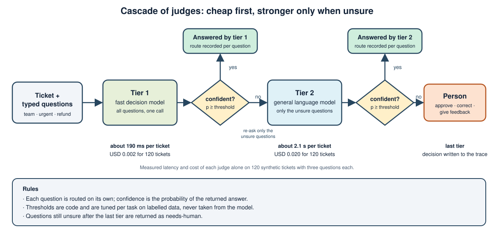

1. Learning outcomes
1.1 Judging, routing, and accounting
- Explain the difference between a generative model and a decision model that returns typed answers with probabilities.
- Place a judge in an agent as evaluator, router, guardrail, or gate, and choose between one model and a separate judge.
- Measure a judge with accuracy, calibration error, and the accuracy of its confident answers.
- Design confidence thresholds, cascades, and human review that act on those probabilities.
- Estimate the cost of an agent run and define the traces and metrics needed to operate it.
2. Topics
2.1 From a probability to a decision
The module separates producing text from deciding, shows how a decision model fits into an evaluator-optimizer loop, reports a measured comparison of four judges on a labelled benchmark of support tickets, and uses the measurements to set thresholds, build a cascade, and budget cost.
3. Decision models
3.1 Generation versus decision
Most agent steps that are called reasoning are in fact decisions with a small answer space: which team handles this request, is this output acceptable, is this action allowed. A generative model answers them by writing text that code must then parse, and the text carries no calibrated measure of how sure the model is.
A decision model reverses the interface. It receives a state and a list of typed questions and returns typed answers with probabilities, in a single forward pass, without producing free text. This class of model is called a System One model, by analogy with fast, intuitive judgment, and serves as a replacement for the smart if-statement inside application code. The agent keeps the slower, deliberate generation for work that needs it.
3.2 Typed questions and probabilities
| Question type | Asks | Returns |
|---|---|---|
| Yes/no | Is a statement about the state true? | One probability of yes |
| Choice | Which one option from a described set? | The top option and a probability for each option |
| Score | Where does the state fall on ordered, described levels? | An expected level and a probability for each level |
Several questions about the same state can be sent in one call. The calling code receives numbers, so thresholds, comparisons, and routing remain ordinary code that can be tested.
Code: Choice, Noul, Score · Answer and Verdict
3.3 Available implementations
Three families can serve this interface, with different trade-offs.
- Hosted decision model. Jev, from TypeSafe AI, was released in September 2026 as a closed-weight model available only through an API. Its documentation lists text input, questions of yes/no, choice, score, and image-location types, a context limit of 64k tokens per request, and billing on input tokens only, at USD 0.042 per million tokens at the time of writing (models, pricing, and limits; questions and thresholds are described in the yes/no question guide). The model is trained with a method called Reinforcement Learning for Calibrated Decisions, and its latency is in the hundreds of milliseconds.
- Open decision models. Small open-weight models trained for the same interface exist, such as the OpenDecider family, with a 400M-parameter encoder and a 4B model distributed with a Python package that exposes the same question schema. They run locally and cost nothing per call, but they are young and their published benchmarks are self-reported. They are mentioned here as an option and are not used in the measurements of this module.
- General language model as judge. Any chat model can be prompted to return structured answers with probabilities, for example DeepSeek as a hosted model or a model served by Ollama as a local one; LiteLLM provides one call interface for all of them. This needs no new infrastructure and works with a local runtime, but the probabilities are the model's own statements and must be calibrated.
Because the three families can expose the same contract, an agent can select the implementation by configuration and compare them on the same questions. The measurements in this module cover the hosted decision model and the general language model.
Code: JevJudge (hosted decision model) · LLMJudge (general model as judge)
4. Judges in the architecture
4.1 Four placements
| Placement | Question it answers | Effect of the answer |
|---|---|---|
| Evaluator | Does the artifact meet the specification? Does it add anything outside it? | Accept, revise, or ask a person |
| Router | Which path, model, or agent should handle this request? | Selects the next node |
| Guardrail | Is this input or output permitted? | Blocks or rewrites |
| Gate | May this irreversible action proceed? | Requires approval below a confidence level |
In an evaluator-optimizer loop the judge sits between generation and the decision to repeat. Deterministic checks, such as tests, remain the hard stop criterion; the judge covers what tests cannot express, such as fit to a written specification or behavior outside its scope.
4.2 One model or a separate judge
Using the same model to generate and to judge is the cheapest design and the weakest. Evaluations of language models as judges report systematic tendencies: a preference for output produced by the same model, a preference for longer answers, and sensitivity to the order of candidates when two are compared: swapping the positions can change the verdict. The judges in this module evaluate one artifact per call, so this last risk does not apply to them. A separate judge reduces shared blind spots, particularly when it differs in provider or training.
- One model: acceptable for low-stakes drafts, with deterministic checks doing the real verification.
- Separate model of the same size: removes self-preference at the price of a second call.
- Dedicated decision model: adds speed and a probability designed to be read, and keeps the generating model out of the verdict.
- Several judges: reserve for decisions whose cost of error is high, because cost grows with each added judge.
4.3 Writing the questions
The quality of the questions bounds the quality of the judge. A small set of rules applies to every implementation.
- Ask one condition per question. Combine answers in code instead of asking compound questions.
- Phrase every yes/no question so that a high value means the condition holds.
- Describe each option and level in terms of observable evidence.
- Keep question wording, thresholds, and options in one module, so they can be versioned and reviewed.
- Send the full state the judge needs, with named fields, and remove everything irrelevant.
4.4 A backend-independent contract
The agent depends on a small interface, not on a provider. The judge receives a state and typed questions and returns answers that carry a value and a probability distribution; the thresholds that turn a probability into a decision are separate code.
class Judge(Protocol):
def judge(self, state: str, questions: Sequence[Question]) -> Verdict: ...
questions = [
Choice(id="team", prompt="Which team should handle this ticket?",
options=["billing", "engineering", "sales"]),
Noul(id="urgent", prompt="Does the customer need a resolution within 24 hours?"),
]
verdict = make_judge().judge(ticket_text, questions) # backend chosen by configuration
verdict["urgent"].probabilities["true"] # for example 0.90
def decide(answer, accept=0.7, reject=0.3):
p = answer.probabilities["true"]
return "yes" if p >= accept else "no" if p <= reject else "unsure"The interface is the same for every use. The repair loop, in which a judge checks generated code against a specification, asks two questions; the snippet above uses support-ticket triage as a neutral example, and section 5 measures judges on tickets for the reason given there.
A backend failure must raise an error. Converting a timeout or an authorization failure into a negative answer silently approves or rejects work for the wrong reason.
Code: Judge protocol · decide · make_judge selecting the backend
5. Measuring a judge
5.1 Metrics
| Metric | Meaning | Why it matters |
|---|---|---|
| Accuracy | Share of correct top answers | Basic quality |
| Expected calibration error (ECE) | Average gap between stated confidence and actual accuracy, over confidence bins; lower is better, 0 is perfect | Whether a probability of 0.9 means correct nine times in ten |
| Brier score | Mean squared error of the probability vector | Combines accuracy and calibration; lower is better |
| Accuracy at confidence 0.7 or more | Accuracy on the answers the judge is sure about | What a threshold-based router can trust |
| Coverage at confidence 0.7 or more | Share of answers the judge is sure about | How much work remains for a larger model or a person |
Accuracy alone hides the failure that matters most in a routed system: a judge that is wrong and certain never triggers escalation.
Worked example of ECE. The judge answers ten yes/no questions and states its confidence for each. Group the answers by stated confidence and compare, in each group, the mean confidence with the share of correct answers.
| Group | Answers | Stated confidence | Correct | Actual accuracy | Gap |
|---|---|---|---|---|---|
| Sure | 5 | 0.90 | 4 of 5 | 0.80 | 0.10 |
| Hesitant | 5 | 0.60 | 3 of 5 | 0.60 | 0.00 |
ECE is the average of the gaps weighted by the share of answers in each group: 5/10 x 0.10 + 5/10 x 0.00 = 0.05. A judge that said 0.90 on all ten answers and got six right would have a single group with a gap of 0.90 - 0.60 = 0.30, so an ECE of 0.30: its "90%" would mean "60%" in practice. The measurements below use ten confidence bins instead of two, and the local 12B model in section 5.5 is the case to remember: a mean confidence of 0.92 against an accuracy of 0.77 on the team question, with an ECE of 0.233. A low ECE does not mean a high accuracy; it means the probabilities can be trusted when thresholds are applied to them.
Code: metrics per task (accuracy, ECE, Brier, confident accuracy and coverage)
5.2 The ticket case
This module uses two cases for two purposes. The repair loop shows a judge at work: it asks whether generated code meets a specification and whether it adds behavior outside it. That case has no ground truth that can be counted, because there is no list of correct verdicts for arbitrary code. To measure accuracy and calibration the module uses a second case, support-ticket triage, in which every item has a known correct label. The judge interface, the typed questions, the probabilities, and the thresholds are the same in both, so the measurements on tickets say how a judge behaves, not how it behaves on code in particular.
A ticket is a short customer message, such as the ones a support desk receives. For each message the judge answers three questions, and the correct answers are stored with the message.
| Question | Type | Correct answers |
|---|---|---|
| Which team should handle this ticket? | Choice | billing, engineering, or sales |
| Does the customer need a resolution within 24 hours? | Yes/no | yes or no |
| Does the customer explicitly ask for a refund or a credit back? | Yes/no | yes or no |
The set has 120 synthetic tickets, with no personal data. One hundred are assembled from templates, with labels correct by construction. Twenty are written by hand to be hard: negations ("I do not want a refund"), refunds that are implied without the word, and urgency expressed without keywords. Four examples follow.
| Ticket text | Team | Urgent | Refund | Kind |
|---|---|---|---|---|
| Invoice 5441 shows the wrong amount. Please just fix it. This blocks our launch tomorrow morning. | billing | yes | no | template |
| What is the difference between the Pro and Team plans? Please just fix it. Take your time. | sales | no | no | template |
| I do not want a refund, I want the double charge on order 5521 explained. Next week is fine. | billing | no | no | hand-written: negation |
| The refund you promised last month has still not arrived, and the bank closes my account tomorrow. | billing | yes | yes | hand-written: implicit refund and urgency |
The data are in the repository: the full set of 120 tickets (one JSON object per line, with the text and the three labels; lines 101 to 120 are the hand-written ones, lines 101-120), and the templates and the hand-written tickets that generate it. Reading a few of the hand-written tickets is the quickest way to see where a judge is likely to fail.
5.3 Benchmark design
The measurements use the 120 tickets and the three questions of section 5.2, each ticket sent in one call. Four systems answered the same questions: Jev (jev-1.14.0, hosted decision model), DeepSeek (deepseek-v4-flash, hosted general language model), Gemma 12B (served by Ollama, local general language model), and an XGBoost classifier on TF-IDF word features trained with five-fold cross-validation.
Code: teams and question wording · building the 120 tickets · running a judge or the XGBoost baseline
5.4 Results on the full ticket set
In the tables below, green marks the best value and red the worst for each task: higher is better for accuracy and for accuracy when confident, and lower is better for ECE and for Brier (0 means perfect calibration for ECE). Mean confidence and coverage are not colored, because a high value is not good in itself: confidence is read against accuracy, and a judge that covers everything is one that is never unsure. Latency and cost, where shown, are also better when lower.
| Task | System | Accuracy | ECE | Brier | Mean confidence | Accuracy when confident | Coverage when confident |
|---|---|---|---|---|---|---|---|
| Team | DeepSeek (deepseek-v4-flash) | 0.87 | 0.063 | 0.153 | 0.87 | 0.93 | 0.88 |
| Team | Jev (jev-1.14.0) | 0.91 | 0.032 | 0.114 | 0.93 | 0.97 | 0.88 |
| Team | XGBoost (TF-IDF) | 0.86 | 0.076 | 0.196 | 0.89 | 0.91 | 0.90 |
| Urgent | DeepSeek (deepseek-v4-flash) | 0.98 | 0.063 | 0.023 | 0.94 | 1.00 | 0.98 |
| Urgent | Jev (jev-1.14.0) | 0.99 | 0.128 | 0.055 | 0.86 | 1.00 | 0.93 |
| Urgent | XGBoost (TF-IDF) | 0.87 | 0.055 | 0.196 | 0.89 | 0.92 | 0.88 |
| Refund | DeepSeek (deepseek-v4-flash) | 1.00 | 0.033 | 0.007 | 0.97 | 1.00 | 1.00 |
| Refund | Jev (jev-1.14.0) | 0.99 | 0.047 | 0.012 | 0.96 | 1.00 | 0.99 |
| Refund | XGBoost (TF-IDF) | 0.97 | 0.033 | 0.063 | 0.95 | 0.97 | 0.99 |
| System | Mean latency per ticket | Cost for 120 tickets | Preparation |
|---|---|---|---|
| DeepSeek (deepseek-v4-flash) | 2,057 ms | USD 0.0202 | Prompt only |
| Jev (jev-1.14.0) | 187 ms | USD 0.0020 | Question wording only |
| XGBoost (TF-IDF) | Negligible | None | Labelled data for every task, retraining on change |
5.5 A local model on the first 49 tickets
A 12B-parameter local language model run on a GPU was interrupted after the first 49 tickets, all template-built. The comparison below uses the same 49 tickets for every system.
| Task | System | Accuracy | ECE | Mean confidence | Coverage when confident |
|---|---|---|---|---|---|
| Team | Gemma 12B (Ollama, local) | 0.77 | 0.233 | 0.92 | 1.00 |
| Team | Jev (jev-1.14.0) | 0.90 | 0.077 | 0.91 | 0.82 |
| Urgent | Gemma 12B (Ollama, local) | 0.85 | 0.096 | 0.90 | 1.00 |
| Urgent | Jev (jev-1.14.0) | 0.98 | 0.132 | 0.87 | 0.94 |
| Refund | Gemma 12B (Ollama, local) | 0.94 | 0.048 | 0.98 | 1.00 |
| Refund | Jev (jev-1.14.0) | 1.00 | 0.043 | 0.96 | 1.00 |
The local model needed about 16 seconds per ticket. On two tickets it never answered the refund question, which both contained the phrase "I do not want a refund"; those two tickets are counted as failures, not as correct answers.
5.6 Reading the results
- On the full set the hosted decision model had the best team accuracy and calibration, about one tenth of the cost, and about eleven times lower latency than the hosted general model.
- The decision model was under-confident on urgency: mean confidence 0.86 against accuracy 0.99. A threshold chosen for one task should not be reused for another.
- The local general model was over-confident and never uncertain: on the team task its mean confidence was 0.92 with accuracy 0.77, and every answer exceeded the 0.7 threshold. A router built on it would never escalate its errors.
- XGBoost was competitive where wording is simple and fell to 0.87 on urgency, where negations such as "no rush" matter.
The data are limited. The set is synthetic and template-heavy, which favors the classifier; it has only 120 tickets, so differences of a few points are not significant; and some team errors may stem from ambiguous labels, which were not audited. Thresholds must be tuned on the target data before deployment.
6. Decision model versus a classical classifier
6.1 What is the same
Both take an input and return a class with a probability, run in milliseconds, and produce no free text. For a fixed problem with plentiful labels they can reach similar accuracy.
6.2 What differs
| Aspect | Gradient-boosted classifier | Decision model |
|---|---|---|
| Input | Engineered features, or text turned into word statistics | Free text or structured data as written |
| Training | A labelled dataset per task, retrained when the task changes | Already trained; asked new questions at run time |
| The question | Fixed inside the model | A parameter of each call |
| Calibration | Usually a separate step | A training objective; measured per task in section 5 |
| Explanation | Feature attribution is available | Probabilities only |
| Control of failure | Fully local and inspectable | Depends on the provider and on the wording of the question |
6.3 Choosing
A trained classifier remains the better choice for a stable problem with labelled data, strict cost or latency limits, and a need for explanations. A decision model fits when there are many questions, when they change often, when labels do not exist yet, or when the input is unstructured text. In practice the decision model can also produce labels for training the classifier later.
7. Thresholds, cascades, and people
7.1 Three-way decisions
A probability supports three outcomes instead of two: act, reject, or defer. The thresholds that separate them express the cost of each error. Raising the acceptance threshold fits actions where a false yes is expensive, such as a refund or an alert to a person on call; lowering it fits situations where a missed detection is expensive, such as a safety issue. The band between the thresholds is the share of work that goes to a person or to a stronger model, and it is the quantity to measure.
7.2 Cascades
A cascade orders judges from cheap and fast to slow and strong. Each question is answered by the first judge whose confidence reaches the threshold; only the unsure questions go to the next judge, and what is still unsure after the last judge goes to a person.
The table replays a cascade from stored answers on all 120 tickets, with three questions per ticket. "Resolved automatically" is the share of questions answered without a person; "accuracy" is measured on those questions. The replay charges a whole ticket to every judge it reaches, which slightly overstates the cost of a live cascade that re-asks only the unsure questions.
| Setup | Threshold | Resolved automatically | Accuracy | Cost per 1,000 tickets | Latency per ticket |
|---|---|---|---|---|---|
| Jev, then DeepSeek, then person | 0.7 | 96.9% | 0.983 | USD 0.06 | about 760 ms |
| Jev alone, then person | 0.7 | 93.3% | 0.991 | USD 0.02 | about 190 ms |
| DeepSeek alone, then person | 0.7 | 95.3% | 0.980 | USD 0.17 | about 2,060 ms |
| Jev, then DeepSeek, then person | 0.9 | 88.3% | 0.997 | USD 0.13 | about 1,540 ms |
| Jev alone, then person | 0.9 | 75.3% | 0.996 | USD 0.02 | about 190 ms |
At 0.7 the cascade halves the number of questions that reach a person compared with the decision model alone, in exchange for a small loss of precision and about three times the cost; it still costs about one third of the general model alone. Raising the threshold buys accuracy with more human review. These figures come from a synthetic set and must be recomputed on real traffic before choosing a threshold.
The replay above is a computation. The same cascade was also run live on 12 tickets (nine of the hand-written tricky ones and three template-built), with Jev as the first tier and DeepSeek as the second, and every call to every tier was saved in a trace: cascade-live.jsonl for a threshold of 0.7 and cascade-live-threshold-095.jsonl for 0.95. Each ticket record lists the calls (which tier was asked which questions, the answers and confidences, latency, cost) and the final answers with the tier that produced each one and whether it was correct.
| Threshold | Questions | Escalated to the second tier | Sent to a person | Correct | Cost |
|---|---|---|---|---|---|
| 0.7 | 36 | 2 | 0 | 33 | USD 0.0004 |
| 0.95 | 36 | 16 | 10 | 33 | USD 0.0014 |
Two escalations at 0.7 show how the mechanism works and what it does not guarantee. For the ticket "The refund you promised last month has still not arrived...", Jev answered the refund question with confidence 0.59, below the threshold, so only that question went to DeepSeek, which answered "no refund requested" with confidence 0.95 and was wrong. For "The API has been timing out since this morning. I do not want a refund...", Jev's urgency answer had confidence 0.57; DeepSeek answered "urgent" with 0.78, against a label of not urgent. In both cases the stronger judge was more confident and still wrong, and neither answer reached a person. Escalation raises confidence, not necessarily correctness; the threshold chooses how many answers are checked, and the benchmark of section 5 is what tells whether the confidence can be trusted. Raising the threshold to 0.95 sends 10 questions to a person but does not change the number of correct answers on this small sample, at about 3.7 times the cost.

Code: CascadeJudge · replaying a cascade from stored answers
7.3 Human review that works
The strongest use of a person in an agent is as the last tier of a cascade, called only in specific conditions.
- Uncertain band: the judge's probability lies between the thresholds.
- Irreversible action: payment, deletion, publication, or any step that cannot be undone, regardless of confidence.
- Exhausted budget: the loop reached its iteration, time, or cost limit.
The reviewer needs a small, decision-ready package: the artifact, the failing evidence, the judge's probabilities, and three actions (approve, stop, or give feedback for another round). The decision and the reviewer's note must be written to the trace. A rate of human review that rises over time signals drift in the judge or in the input, and the recorded decisions are the labelled data for re-calibrating the thresholds.
7.4 Escalating the generating model
Routing also applies to the model that does the work. A first attempt on a small, fast model is cheap; a failed attempt is a deterministic signal, from the tests, that the task is harder than expected. The next attempt then uses a larger model with the failure as feedback. This keeps the average cost near that of the small model while preserving the capability of the large one for the cases that need it.
8. Cost and observability
8.1 Cost model
The cost of a run is the sum over iterations of the generator call and the evaluator calls, plus any person's time.
run cost = iterations x (generator tokens x generator price
+ evaluator input tokens x evaluator price)
+ cascade escalations x stronger judge price
+ human reviews x reviewer costThree observations follow from the measurements. First, iterations multiply everything, so the budget limit is also a cost limit. Second, a dedicated decision model priced on input tokens only makes the evaluator a small term, while a general model used as evaluator can approach the cost of the generator. Third, the cheapest path is often the one that avoids the call: deterministic checks first, then a fast judge, then stronger models only for what remains.
8.2 What to trace
Every node should append a structured record to the trace, with enough fields to reconstruct and price the run.
- Run identifier, iteration number, node name, and timestamps.
- Model identifier and version, including the exact version of any hosted judge.
- Input and output sizes in tokens, latency, and computed cost.
- For every judge answer: the question, the value, the probabilities, and the decision taken.
- For harness steps: test counts, failures, and static violations.
- For human steps: the question shown, the reply, and the elapsed time.
Tracing platforms and open instrumentation standards store such records and show a run as a tree of steps. The same records can be written as lines of JSON, which is sufficient for a small system.
Code: generate record · harness · judge · human · example trace
8.3 Metrics to watch
| Metric | Signals |
|---|---|
| Iterations per run and success rate | Task difficulty, weak feedback, wrong budget |
| Cost and latency per run, by node | Where money and time go |
| Share of questions escalated or sent to a person | Judge quality and drift |
| Agreement between judge and later human decision | Calibration over time |
| Error and retry rate, by provider | Reliability of dependencies |
8.4 Operating a judge
- Pin the model version of a hosted judge once thresholds have been calibrated, because an alias can move to a new release.
- Re-run the labelled benchmark whenever the judge, the question wording, or the thresholds change.
- Treat a missing answer as an error and ask again for only the missing questions.
- Do not send personal or private data to a hosted judge without approval; use a local judge or synthetic data for development.
- Keep an offline fallback so that the system degrades to a local model when the hosted service or the network is unavailable.
9. Guided lab
9.1 Choose the judge by configuration
The exercises are in the chapter 14 directory of the companion repository. The same questions run on different judges by changing environment variables.
cd ch14
LLM_PROVIDER=deepseek .venv/bin/python demo_judge.py
JUDGE_BACKEND=jev JEV_MODEL=jev-1.14.0 .venv/bin/python demo_judge.py
LLM_PROVIDER=ollama OLLAMA_MODEL=gemma4:e4b .venv/bin/python demo_judge.py
JUDGE_BACKEND=cascade CASCADE_THRESHOLD=0.7 LLM_PROVIDER=deepseek .venv/bin/python demo_judge.py9.2 Measure and route
.venv/bin/python bench/run_bench.py --backend llm --label my-model
.venv/bin/python bench/report.py
.venv/bin/python bench/routing_replay.py --tiers jev-1.14.0 deepseek-v4-flash- Run the benchmark on a judge of your choice and compare its calibration with the stored results.
- Replay a cascade at thresholds 0.6, 0.7, and 0.8 and find the point where the share sent to a person is acceptable.
- Add five tickets that contain negations and observe which judge fails first.
9.3 Close the loop
- Run the agentic loop with a hosted decision model as evaluator and compare its cost with a general model as evaluator.
- Run it with escalation enabled and a small first model, and read the trace to see which iteration used which model.
10. Source map
10.1 Primary references
- Introducing System One models and Jev
- TypeSafe documentation
- Jev models, pricing, and context limits
- Writing yes/no questions and choosing thresholds
- OpenDecider open decision models
- Judging LLM-as-a-Judge with MT-Bench and Chatbot Arena
- LangSmith documentation
- OpenTelemetry documentation
- Chapter 14 judge, benchmark, and routing exercises
11. Key takeaways
11.1 Design rules
- Use a typed decision where the answer space is small; keep generation for work that needs it.
- Keep the generating model out of its own verdict whenever the cost of an error is not negligible.
- Measure calibration on the target data: a confident wrong judge defeats threshold-based routing.
- Put thresholds in code, tune them per task, and send the uncertain band to a stronger judge or a person.
- Ask a person for uncertainty, irreversible actions, and exhausted budgets, and record every decision.
- Trace every node with model version, cost, latency, and the judge's probabilities.
- Pin hosted model versions and keep an offline fallback.